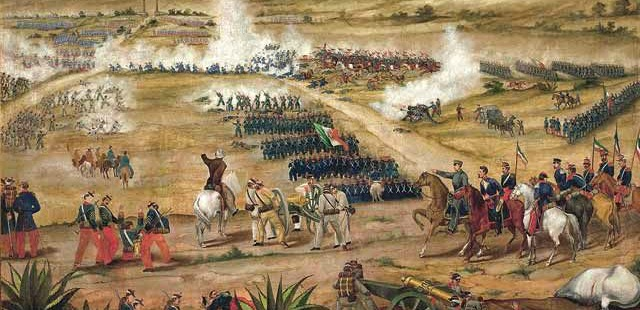

Batalla de Puebla y 4 de Mayo
Batalla de Puebla

¿Que es la Batalla de Puebla?
La batalla de Puebla fue un combate librado el 5 de mayo de 1862 en las cercanías de la ciudad de Puebla, entre los ejércitos de la República Mexicana, bajo el mando de Ignacio Zaragoza, y del Segundo Imperio Francés, dirigido por Charles Ferdinand Latrille, conde de Lorencez, durante la Segunda Intervención Francesa en México, cuyo resultado fue una victoria importante para los mexicanos ya que con unas fuerzas consideradas como inferiores lograron vencer a uno de los ejércitos más experimentados y respetados de su época. Pese a su éxito, la batalla no impidió la invasión del país, sólo la retrasó, sin embargo, sería la primera batalla de una guerra que finalmente México ganaría. Los franceses regresarían al siguiente año, con lo que se libró una segunda batalla en Puebla en la que se enfrentaron 35 000 franceses contra 29 000 mexicanos (defensa que duró 62 días), y lograrían avanzar hasta la Ciudad de México, lo que permitió establecer el Segundo Imperio Mexicano. Finalmente, ante la incapacidad de consolidar un imperio y después de perder 11 000 hombres debido a la actividad guerrillera que nunca dejó de subsistir,1 los franceses se retiraron incondicionalmente del país en el año de1867.Antecedentes de la Batalla de Puebla
o En octubre de 1861, Francia, Inglaterra y España firmaron la Convención de Londres, en la cual se comprometieron a enviar contingentes militares a México, la deuda era de 80 millones de pesos; 69 millones para los ingleses, 9 millones para los españoles y 2 millones para Francia. La Alianza Tripartita amenazó al presidente Benito Juárez con invadir el país si no se saldaba por completo las deudas con los tres países europeos.
o Juárez responde con un exhorto para lograr un arreglo amistoso, en un principio la Alianza Tripartita aceptó el llamado al diálogo. Sus representantes se reunieron con Manuel Doblado, ministro de Relaciones Exteriores, quien consiguió que Juan Prim, representante español, y Lord John Russell por Inglaterra se retiraran; lograron negociar por la vía diplomática los términos y condiciones en los que se pagaría posteriormente la deuda. Es entonces cuando Juárez creo al Ejército de Oriente y designó al general Ignacio Zaragoza al frente de este.
o El 5 de marzo, cuando aún se realizaban las negociaciones, llegó a Veracruz un contingente militar francés bajo el mando de Charles Ferdinand Latrille, conde de Lorencez. A finales de abril, Lorencez se puso en marcha, junto con sus efectivos, hacia Puebla, con el fin de avanzar para conquistar la Ciudad de México.
Consecuencias de la Batalla de Puebla
o En Palacio Nacional en la Ciudad de México se sabía poco acerca del conflicto. Finalmente, a las 5:49 de la tarde, del 5 de mayo, Zaragoza envía un telegrama y anuncia la victoria: “Las armas del Supremo Gobierno se han cubierto de gloria: el enemigo ha hecho esfuerzos supremos por apoderarse del Cerro de Guadalupe, que atacó por el oriente de izquierda y derecha durante tres horas: fue rechazado tres veces en completa dispersión y en estos momentos está formado en batalla, fuerte de más de 4,000 hombres, frente al cerro de Guadalupe, fuera de tiro. No lo bato, como desearía, porque el Gobierno sabe (que) no tengo para ello fuerza bastante. Calculo la pérdida del enemigo, que llegó hasta los fosos de Guadalupe en su ataque, en 600 o 700 entre muertos y heridos; 400 habremos tenido nosotros. Sírvase vd. dar cuenta de este parte al C. Presidente.— I. Zaragoza”
o La histórica Batalla de Puebla dio inicio antes del mediodía del 5 de mayo de 1862 y finalizó alrededor de las cinco de la tarde con una memorable victoria para el pueblo de México.
Particepes en la Batalla:
Francia
Charles Ferdinad de Latrille conde de Lorencez.
De Mexico

Ignacio Zaragoza

Felipe Berriozabal

Porfirio Diaz

Santiago Tapia
Ignacio Mejia

Miguel Negrete
Batalla de Atlixco
Batalla de Atlixco

¿Se consiguio la victoria?
Esta batalla culminó con una victoria republicana y debido a esto el grupo conservador de Márquez no pudo lograr su objetivo de auxiliar a las tropas francesas del Conde de Lorencez en la batalla de Puebla.Porque se le nombro Heroica Ciudad
 Por lo cual, el gobierno de Juárez consideró que sin el triunfo del 4 de Mayo en Atlixco no hubiera sido posible la victoria de la batalla de Puebla en los Fuertes de Loreto, el 5 de mayo de 1862. Por este motivo, el 20 de noviembre de 1998, el Congreso del Estado de Puebla declaró a Atlixco Heroica Ciudad.S
Por lo cual, el gobierno de Juárez consideró que sin el triunfo del 4 de Mayo en Atlixco no hubiera sido posible la victoria de la batalla de Puebla en los Fuertes de Loreto, el 5 de mayo de 1862. Por este motivo, el 20 de noviembre de 1998, el Congreso del Estado de Puebla declaró a Atlixco Heroica Ciudad.S
Partipes de la Batalla
Antonio Carvajal
Tomás O'Horán y Escudero

José María Cobos

Leonardo Márquez